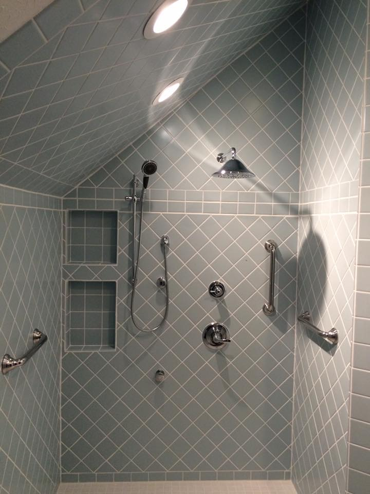

Services · Kanawha & Putnam Counties
Service on allyour plumbing needs.
Valley Plumbing offers a variety of professional plumbing services for residential and commercial customers – from a dripping faucet to digging up and replacing a broken water line.
Backflow testing
Backflow occurs when unwanted water flows in the opposite direction as intended. That can cause serious health risks if your fresh water supply is contaminated with foul water. It is usually caused by a drop in pressure from the public water system.
Annual backflow testing helps ensure that only clean, potable water is flowing into your home or business. It is not a job for do-it-yourselfers: it must be conducted by someone who is trained and certified. Valley Plumbing’s licensed professionals handle backflow testing, certification, new installation, maintenance and repair, and can install and maintain the proper backflow prevention equipment to keep your business and family safe.
- Testing & certification
- New installation
- Maintenance & repair
Drain cleaning
A clogged kitchen drain, toilet, basement drain or sewer line – our staff will handle the problem. We perform most kinds of drain and sewer cleaning.
We have specialized equipment that helps us diagnose and solve all types of residential, commercial and industrial drain and sewer problems. Most sewer problems are caused by a buildup of grease and food plus hard objects such as straws, mop strings, toys or feminine hygiene products. Besides causing problems in the sewer, these items can block sink drains, floor drains and toilets.
Emergency service is available for additional costs.
Excavation
Unlike most plumbing companies, Valley Plumbing has the expertise and equipment to excavate for residential and commercial customers – so sewer, water line and other buried line repairs are handled by one crew.
We dig down to the affected line, repair or replace the damaged section and make the necessary connections. When practical, we add outside clean-outs for easier access to the line in the future. We also install new hook-ups to city sewers and water lines, and handle all aspects of the project with the owner and the city.
Water lines
Underground water line breaks are disruptive and often need immediate repair. We own the needed equipment and keep a fully stocked warehouse of pipe and parts, so we can respond quickly to these emergencies 24/7.
Sewer & gas lines
We inspect your sewer system to make sure things are functioning properly. Never try to repair a gas line or gas leak yourself: if you smell the sulfur-like odor of mercaptan, call 911 immediately. Once the gas is off and everyone is safe, we fix the problem.
French drains
Perforated pipe in gravel, installed in a trench around the foundation, routes groundwater away and keeps it out of the basement or crawl space. Request an on-site inspection.
Perma-Liner
Don’t dig up your yard. A liner restores cracked pipes, stops infiltration, prevents root intrusion, minimizes cleaning costs and increases host pipe life.
Faucets & toilets
A dripping faucet wastes water – and money. We repair existing faucets or install new ones in your bathroom or kitchen; attractive, properly functioning fixtures can increase your home’s value.
When a toilet stops working, your home comes to a halt. We respond quickly to leaks, clogs, running toilets, poor flushing and new installations.
- Wolverine Brass
- Delta
- Proflow
- Lifetime warranty on residential faucets & toilets
Remodeling
Transform a dysfunctional, outdated kitchen or bathroom into a stunning, modern room you’ll love to spend time in.
A renovation can improve the way your home works and add value to it. Ultra modern or more traditional – we work with you to create a space you can enjoy for years to come. We are licensed, bonded and insured, and we provide all needed permits and inspections for your project.
See before & after
Water heaters
Scalding or freezing water when someone flushes during your shower? You’re surpassing the capacity of your water heater.
We help you choose the water heater that best meets your family’s needs and budget, purchase and install the new unit, and dispose of the old one. We are an authorized Rinnai Tankless dealer, and we also supply and install traditional electric and gas tank heaters, including A.O. Smith and American.
- New installations
- Service & repair
- All makes and models
- Ask about our 10-year warranty on heaters
Maintenance & warranty programs
Drip, drip, drip – that’s the sound of your utility bill inching up. Preventative maintenance keeps old, worn pipes from turning into water damage.
Our programs include
- Periodic inspections
- Adjustments and lubrications
- Gas, water and sewer line inspection
- 90-day warranty on all repairs
Preferred Customer Service Agreement
- You determine the frequency of maintenance calls
- FREE labor on normal maintenance parts installed during scheduled service
- Your price will not increase during the time of your service agreement
- Licensed experts working to protect your home